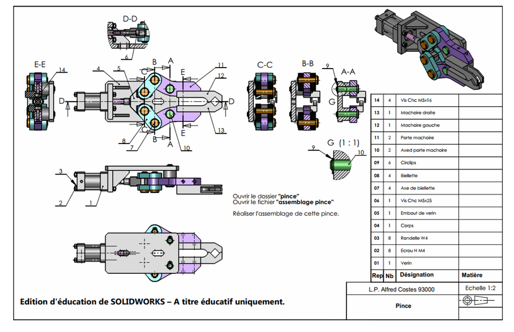
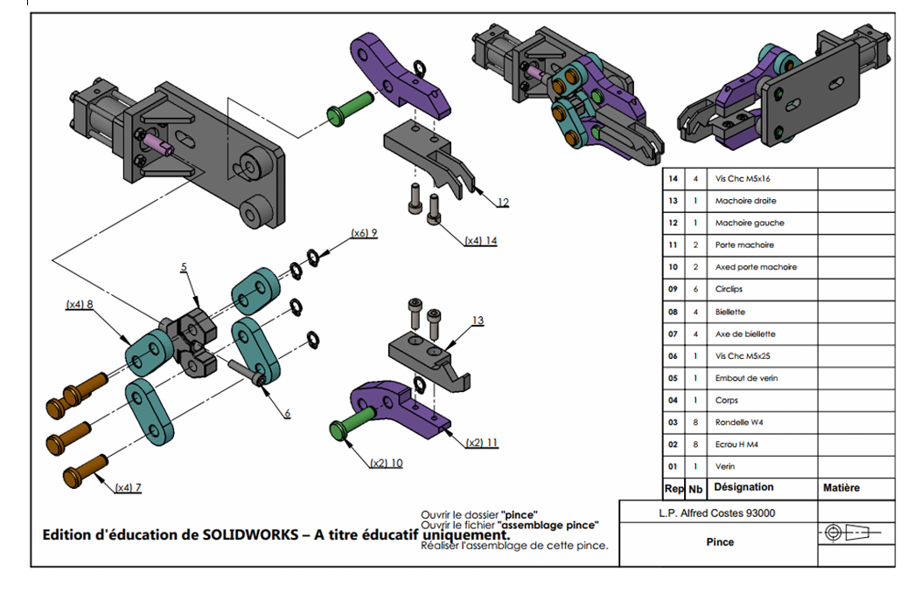
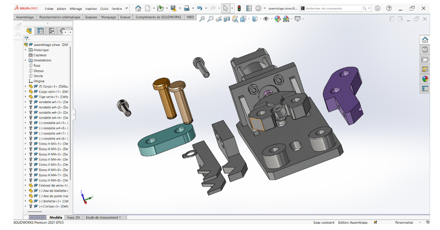
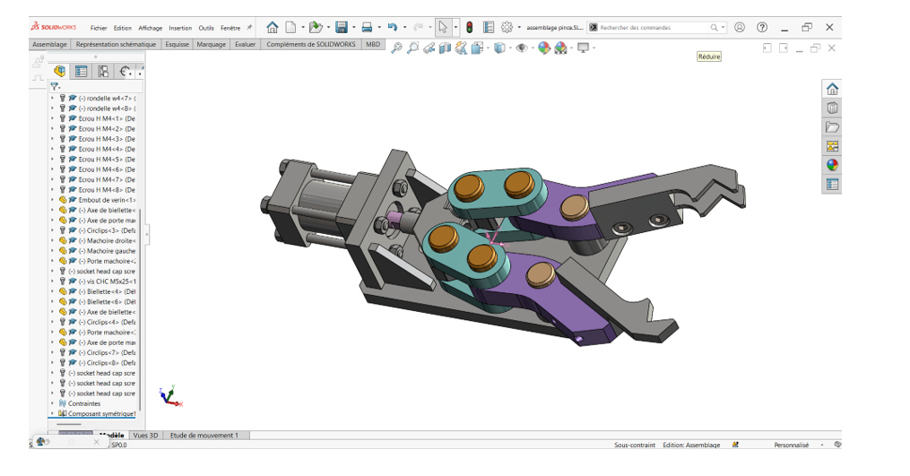

V. Assemblage
1. Présentation générale de l'assemblage
Nom de l'assemblage : Pince
Date de création : 07/06/2025
Échelle : 1/1
2. Caractéristiques techniques
- Système d'unité : MMGS (millimètre, gramme, seconde).
- Décimale : 2 (toutes les dimensions doivent être exprimées avec deux chiffres après la virgule.)
3. Représentation graphique


Ces mises en page montrent clairement chacune des pièces qui constituent l'assemblage, avec une nomenclature indiquant le nombre de pièces de l'ensemble. Vous trouverez également les vues de l'assemblage (Vue de Face, Droite, Dessus, quelques coupes, ainsi que la vue isométrique).
4. Processus de réalisation
Étape 1 : Importation des fichiers dans l'environnement d'assemblage
- Ouverture de l'environnement d'assemblage :
- Ouvrez un nouveau document d'assemblage dans SolidWorks.
- Faites un clic pour déposer la première pièce (généralement la pièce fixe, comme le corps principal) dès que l'interface d'assemblage s'ouvre.
- Ajout des pièces complémentaires :
- Cliquez sur l'onglet "Assemblage" dans la barre d'outils, puis sur "Insérer des composants".
- Dans la fenêtre qui s'ouvre, cliquez sur "Parcourir" pour accéder à vos fichiers.
- Sélectionnez uniquement les pièces nécessaires à l'assemblage final et insérez-les une par une dans l'environnement.
- Liste des pièces à ajouter à l'assemblage :
- Axe de biellette
- Axe de porte-mâchoire
- Circlips
- Biellette
- Mâchoire droite
- Mâchoire gauche
- Porte-mâchoire
- Vis CHC M16x16
- Vis CHC M5x25

Étape 2 : Assemblage des composants (Contraintes de base)
- Assemblage de la biellette et de l'embout de vérin :
- Rendre coaxial le trou de la Biellette avec celui de l'Embout de vérin.
- Rendre coïncidente la face supérieure de la Biellette avec la face inférieure de l'Embout de vérin.
- Répétez ces deux contraintes pour la seconde Biellette (coaxialité + coïncidence inversée).
- Assemblage de l'axe de biellette :
- Rendre coaxial l'axe de Biellette avec le trou de la Biellette.
- Rendre coïncidente la face supérieure de la Biellette avec la surface d'appui de l'axe.
- Répétez ces contraintes pour le deuxième axe de Biellette.
- Montage du circlips sur l'axe :
- Rendre coaxial le circlips avec l'axe de Biellette.
- Rendre coïncidente la face supérieure du circlips avec la face de la gorge de l'axe.
- Correction d'une erreur (si nécessaire) :
- En cas d'erreur (par exemple, avoir utilisé l'axe de porte-mâchoire à la place de l'axe de biellette), supprimez les contraintes associées à cette pièce et recommencez correctement.
- Duplication des composants :
- Maintenez Ctrl et faites glisser l'axe de Biellette pour en créer une copie.
- Refaites les contraintes de coaxialité et de coïncidence entre les pièces dupliquées.
- Vis et symétrie :
- Rendre coaxiale la surface supérieure de la Biellette avec la surface d'appui de la vis.
- Dupliquez le circlips pour le second axe de Biellette, puis appliquez :
- Coaxialité entre le circlips et l'axe,
- Coïncidence entre la surface du circlips et la gorge.
- Réalisez une symétrie de l'ensemble (axe de Biellette, Circlips, Biellette) par rapport au plan de dessus.
Étape 3 : Assemblage du porte-mâchoire
- Rendre coaxial le trou du porte-mâchoire avec l'axe de Biellette.
- Rendre coaxial le trou de l'axe du porte-mâchoire avec le trou sur le corps.
- Rendre coïncidente la face inférieure du porte-mâchoire avec la face supérieure de la Biellette.
- Retournez le deuxième porte-mâchoire si nécessaire dans le sens normal.
- Répétez les contraintes de coaxialité et coïncidence pour le second porte-mâchoire.
Étape 4 : Assemblage des mâchoires
- Tournez la mâchoire droite pour qu'elle soit orientée correctement.
- Rendre coaxial le trou de la mâchoire gauche avec celui du porte-mâchoire.
- Rendre coïncidente la face de la mâchoire avec celle du porte-mâchoire.
- Répétez ces contraintes pour les autres trous et faces.
Étape 5 : Finalisation avec axes, vis et circlips
- Rendre coaxial le trou du porte-mâchoire avec l'axe,
- Rendre coïncidente la surface du porte-mâchoire avec la surface d'appui de l'axe de Biellette.
- Rendre coaxial l'axe du porte-mâchoire avec le trou correspondant.
- Rendre coïncidente la surface supérieure du porte-mâchoire gauche avec la surface d'appui de l'axe.
- Dupliquez le circlips pour le deuxième axe de porte-mâchoire.
- Rendre coaxial le circlips et l'axe,
- Rendre coïncidente la surface du circlips avec la gorge.
- Rendre coaxiale la vis CHC M5×16 mm avec le trou de la mâchoire.
- Rendre coïncidente la surface de la mâchoire avec la surface d'appui de l'axe.
- Rendre coaxiale la vis CHC M5×25 mm avec le trou correspondant.
- Rendre coïncidente la face d'appui de l'axe du porte-mâchoire avec la surface du lamage de l'embout de vérin.
Enfin, nous avons obtenu l'assemblage au complet.

Évaluation des coordonnées du centre de gravité
Procédons maintenant des coordonnées du centre de gravité.
Position Maximale :
X = -25.78 mm | Y = 0.06 mm | Z = 19.86 mmPosition Minimale :
X = -29.15 mm | Y = 0.16 mm | Z = 19.86 mmConclusion Générale
La présente documentation a permis de retracer de manière structurée l'ensemble des travaux réalisés dans le cadre de la partie mécanique du test de présélection du Tekbot Robotics Challenge 2025. Elle met en évidence les compétences mobilisées en modélisation 3D, en assemblage de pièces mécaniques, ainsi qu'en vérification des propriétés physiques à travers l'utilisation du logiciel SolidWorks.
La maîtrise des outils de CAO, la compréhension des contraintes géométriques et matérielles, ainsi que la capacité à respecter les tolérances imposées ont été essentielles pour valider les différentes étapes du test. L'assemblage final, centré sur une pince mécanique, a également permis d'aborder des notions importantes telles que l'application de contraintes d'assemblage et le calcul du centre de gravité.
Ce travail marque une étape préparatoire essentielle à la suite du projet, qui consistera à concevoir un robot complet destiné à la collecte des déchets en milieu urbain. Il constitue non seulement une preuve de compétence technique, mais aussi une base solide pour le développement futur de solutions robotiques innovantes.